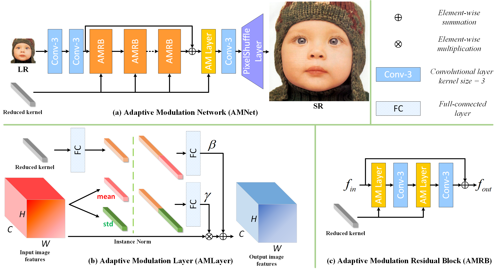

Zheng Hui (惠 政) |
Biography
I got my Ph.D. degree from Video & Image Processing System Lab, Xidian University, supervised by Prof. Xinbo Gao. I received the B.S. degree in electronic and information engineering from Xidian University, China, in 2016.
Research Interest
My research interests include video generation (AIGC), image/video restoration and enhancement.
芒果TV山海研究院 长期招收研究型实习生，欢迎感兴趣的同学联系
欢迎发送简历至 huizheng@mgtv.com
实习的主要任务为发表顶会论文
- 文生图、图像编辑、可控视频生成
- 图像视频理解
News
- One paper is accepted to AAAI 2024.
- Add NAFNet (image denoising) in ModelScope
Selected Publications
|  |
Learning the Non-differentiable Optimization for Blind Super-Resolution |
|
Progressive Perception-Oriented Network for Single Image Super-Resolution |
|
|
Lightweight Image Super-Resolution with Feature Enhancement Residual Network |
|

|
Image Fine-grained Inpainting |
|
Lightweight Image Super-Resolution with Information Multi-distillation Network |
|

|
Perception-preserving convolutional networks for image enhancement on smartphones |

|
Fast and Accurate Single Image Super-Resolution via Information Distillation Network |
Awards
- 第二届“马栏山杯”国际音视频算法大赛（2021）视频补全赛道 冠军（1/451, 唯一作者）[Certificate] [颁奖盛典]
- 首届“马栏山杯”国际音视频算法大赛（2020）画质损伤修复赛道 亚军（2/315, 唯一作者）[Certificate] [颁奖盛典]
- 深圳市政府联合彭城实验室举办的首届全国人工智能大赛（2019）AI+4K HDR赛道 优胜奖（6/1200, 唯一作者）[Certificate]
- 声网举办的AI in RTE 2020 图像超分辨率性能挑战赛 亚军（2/530, 唯一作者）[Certificate]
- 声网举办的AI in RTC 2019 图像超分辨率性能挑战赛 冠军（1/291, 唯一作者）[Certificate]
- 3rd Place Award in CVPR 2022 NTIRE Challenge on Efficient Image Super-Resolution Sub-track 2 Overall Performance (First author) [Certificate]
- Winner Award in ECCV 2020 AIM Challenge on Extreme Inpainting Track1&Track2 (First author) [Certificate]
- Winner Award in ICCV 2019 Workshop AIM Challenge on Constrained Super-Resolution Track1&Track2 (First author) [Certificate]
- Winner Award in CVPR 2018 Workshop NTIRE Challenge on Single Image Super-Resolution Track 1: Classic Bicubic (First author) [Certificate]
Services
Journal Reviewer:
- IEEE Transactions on Pattern Analysis and Machine Intelligence (TPAMI)
- IEEE Transactions on Image Processing (TIP)
- IEEE Transactions on Neural Networks and Learning Systems (TNNLS)
- IEEE Transactions on Multimedia (TMM)
- IEEE Transactions on Computational Imaging (TCI)
- Signal Processing Letters (SPL)
- Neurocomputing